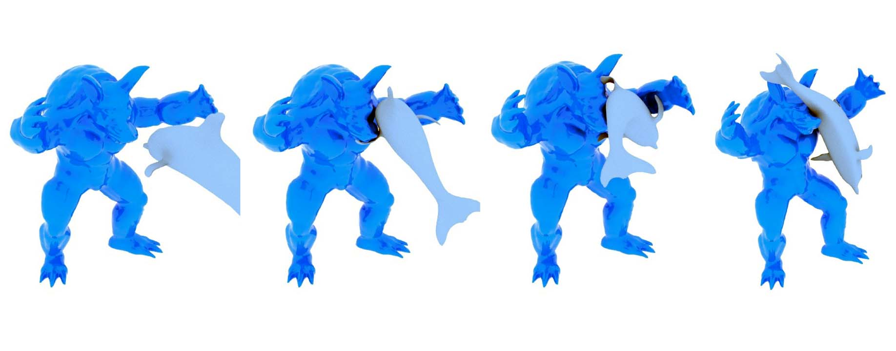
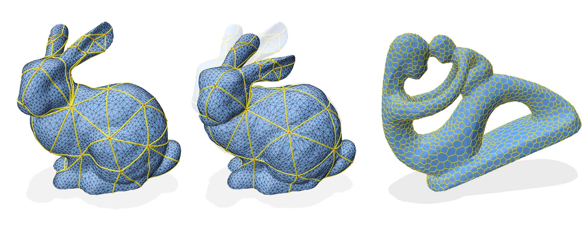
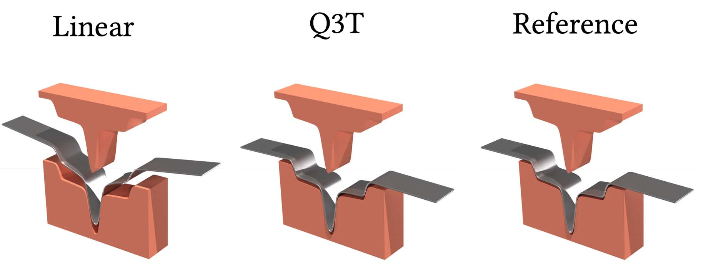

Smart Simulation
Balancing accuracy, efficiency, and flexibility is a core challenge in computational modeling, especially for complex physical and mechanical systems. High-fidelity simulations capture rich physical behaviors but are often computationally expensive, while faster methods risk sacrificing realism. Our research focuses on developing computational models that retain essential physical accuracy while remaining scalable and adaptable across different problem domains. By integrating physics-based simulation, data-driven techniques, and differentiable simulation, we aim to create models that efficiently solve a broad range of engineering and scientific challenges, from metamaterials and robotics to biological tissues.
Differentiable Voronoi Diagrams

Navigating topological transitions in cellular mechanical systems is a significant challenge for existing simulation methods. While abstract models lack predictive capabilities at the cellular level, explicit network representations struggle with topology changes, and per-cell representations are computationally too demanding for large-scale simulations. To address these challenges, we propose a novel cell-centered approach based on differentiable Voronoi diagrams. Representing each cell with a Voronoi site, our method defines shape and topology of the interface network implicitly. In this way, we substantially reduce the number of problem variables, eliminate the need for explicit contact handling, and ensure continuous geometry changes during topological transitions. Closed-form derivatives of network positions facilitate simulation with Newton-type methods for a wide range of per-cell energies. Finally, we extend our differentiable Voronoi diagrams to enable coupling with arbitrary rigid and deformable boundaries. We apply our approach to a diverse set of examples, highlighting splitting and merging of cells as well as neighborhood changes. We illustrate applications to inverse problems by matching soap foam simulations to real-world images. Comparative analysis with explicit cell models reveals that our method achieves qualitatively comparable results at significantly faster computation times.
Differentiable Contact for Soft Body Simulations

Modeling contact between deformable solids is a fundamental problem in computer animation, mechanical design, and robotics. Existing methods based on C0-discretizations—piece-wise linear or polynomial surfaces—suffer from discontinuities and irregularities in tangential contact forces, which can significantly affect simulation outcomes and even prevent convergence. In this work, we show that these limitations can be overcome with a smooth surface representation based on Implicit Moving Least Squares (IMLS). In particular, we propose a self collision detection scheme tailored to IMLS surfaces that enables robust and efficient handling of challenging self contacts. Through a series of test cases, we show that our approach offers advantages over existing methods in terms of accuracy and robustness for both forward and inverse problems.
Differentiable Geodesic Distance

Computing intrinsic distances on discrete surfaces is at the heart of many minimization problems in geometry processing and beyond. Solving these problems is extremely challenging as it demands the computation of on-surface distances along with their derivatives. We present a novel approach for intrinsic minimization of distance-based objectives defined on triangle meshes. Using a variational formulation of shortest-path geodesics, we compute first and second-order distance derivatives based on the implicit function theorem, thus opening the door to efficient Newton-type minimization solvers. We demonstrate our differentiable geodesic distance framework on a wide range of examples, including geodesic networks and membranes on surfaces of arbitrary genus, two-way coupling between hosting surface and embedded system, differentiable geodesic Voronoi diagrams, and efficient computation of Karcher means on complex shapes. Our analysis shows that second-order descent methods based on our differentiable geodesics outperform existing first-order and quasi-Newton methods by large margins.
Efficient Solid Shell Elements

We introduce an approach for simulating elastoplastic surfaces using quadratic through-the-thickness (Q3T) solid shell elements. Modeling the mechanics of deformable surfaces has been a cornerstone of graphics research for decades. Although thin shell models are suitable for many materials and applications, simulation-based planning of plastic forming processes requires attention to deformation in the thickness direction. Building on recent advances in the graphics community, we explore solid shell elements for modeling elastoplastic surfaces. Linear prism elements perform well for compressible materials such as thick cloth and foam mats. However, due to their inability to capture non-constant strain in the thickness direction, they suffer from severe locking artifacts when applied to incompressible and plastic materials. Q3T elements address this limitation with a minimal yet effective modification to linear prisms, resulting in significantly improved performance with only a moderate increase in computational cost. Through various examples, we demonstrate that Q3T elements closely match the qualitative behavior of reference simulations and provide accurate quantitative results compared to real-world deep drawing experiments.